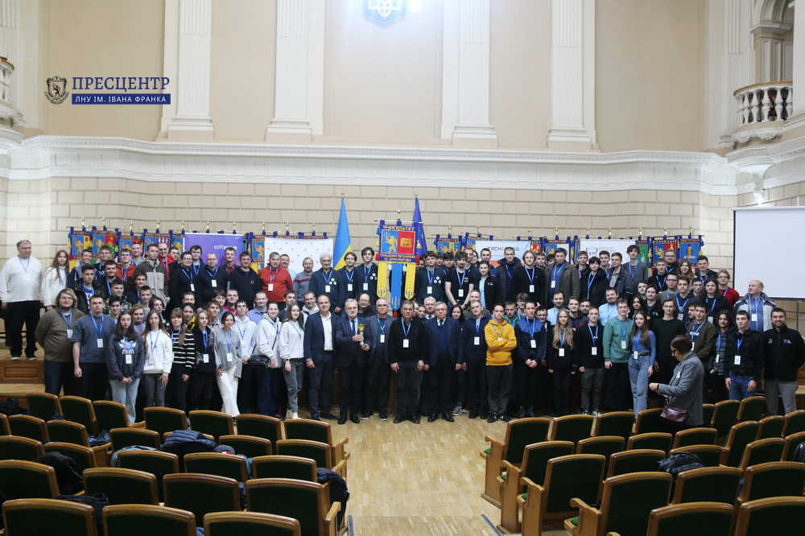

Упродовж 16-17 листопада 2024 року у Львівському національному університеті імені Івана Франка відбувся IIІ фінальний етап Всеукраїнської студентської олімпіади з програмування. Водночас захід став півфіналом Світової першості серед студентських команд у Південно-східному європейському регіоні ICPC (International Collegiate Programming Contest). До півфінального етапу змагання цьогоріч увійшли учасники з восьми держав: України, Болгарії, Греції, Кіпру, Північної Македонії, Румунії, Сербії і Туреччини.
ICPC – це найбільша студентська Олімпіада з програмування, до проведення якої долучається декілька тисяч навчальних закладів з усього світу. Вже не один рік захід стає цінною можливістю для юних фахівців випробувати власні знання та навички, відчути запал і натхнення від захопливого процесу змагання. Водночас такі заходи стимулюють інтерес у молоді до наукових досліджень та розвитку інновацій в сфері інформаційних технологій, дають змогу познайомитися з однодумцями з різних навчальних установ, обмінятися досвідом та ідеями.
Півфінал Світової першості відбувався на двох майданчиках – у Львівському університеті, де зібрались 36 українських команд, та у Політехнічному університеті Бухареста, де змагалися 58 команд з інших країн Південно-східного регіону.
Перед початком урочистого відкриття присутні вшанували хвилиною мовчання полеглих Героїв, які боролися за Україну у протистоянні з російським агресором.
Надалі учасників олімпіади ICPC 2024 привітав доцент кафедри прикладної математики Львівського університету Василь Білецький, який пояснив особливості проведення заходу та наголосив на тому, що організаторам дуже приємно бачити наживо молодих та активних поціновувачів спортивного програмування після того, як ці змагання не один рік відбувалися в дистанційному або ж змішаному форматі. «В першому етапі Всеукраїнської студентської олімпіади з програмування, який все ще відбувався дистанційно, взяли участь понад 500 команд, в другому етапі – понад 200 команд, а сьогодні ми вітаємо 36 найкращих команд, які боротимуться за Всеукраїнську першість і можливість продемонструвати свої знання на Світовому фіналі», – додав Василь Білецький.
До вітального слова запросили проректора з наукової роботи ЛНУ ім. Івана Франка, академіка НАН України, професора Романа Гладишевського. «Сьогодні перед фахівцями у сфері програмування існує багато завдань, серед яких – використання можливостей штучного інтелекту, квантових комп’ютерів, а також подолання нових викликів, передусім пов’язаних з війною в Україні та перспективою відновлення держави після перемоги. З певністю можна стверджувати, що зустріч у цій залі об’єднує не лише майбутнє, але й сьогодення сучасного програмування. Ви, дорогі учасники Олімпіади, вже загартовані боротьбою на попередніх етапах, адже витримали конкуренцію і вийшли переможцями з минулих турнірів. Відтак, я переконаний, що новий етап змагання буде цікавим для кожного й усі матимуть змогу застосувати креативність та оригінальні підходи до вирішення задач. Бажаю, аби ця Олімпіада стала важливою сходинкою у професійній кар’єрі учасників і щиро вірю, що саме завдяки молодому поколінню фахівців ми зможемо збудувати інтелектуальну та високотехнологічну Україну», – наголосив Роман Гладишевський.
Також учасників привітав проректор з науково-педагогічної роботи та інформатизації Віталій Кухарський. «Львівський університет має велику приємність бути майданчиком для проведення Олімпіади з програмування світового масштабу. Думаю, кожен з нас сьогодні відчуває себе учасником великої події, але найбільше хвилюються, безперечно, студенти, яким вже невдовзі доведеться змагатися за перемогу. Особливу вдячність висловлюю всім організаторам і партнерам заходу, які здійснили велику роботу у підготовці всіх належних умов для проведення Олімпіади», – акцентував Віталій Кухарський та дав пораду учасникам – ставити перед собою високі цілі і впевнено йти до свого успіху.
До присутніх звернувся декан факультету прикладної математики та інформатики Іван Дияк. «Попри складний час, у якому перебуваємо всі ми, сьогодні в Львівському університеті зібралися активні, талановиті студенти, які представляють 36 команд з різних навчальних закладів всієї України. Я вірю, що кожен учасник зможе сповна продемонструвати свої знання, вміння, нестандартне мислення. Бажаю Вам доброго настрою, налаштування на хороші результати, впевненості у своїх силах та перемоги найсильнішим», – підкреслив Іван Дияк.
Надалі учасників привітали, компанії-спонсори турніру, серед яких – Huawei, Jane Street, Softserve та Bending Spoons.
Опісля урочистостей учасники побували на екскурсії Музеєм історії Львівського університету, де зі студентами поспілкувався проректор з науково-педагогічної роботи та соціальних питань і розвитку, професор Володимир Качмар. Він розповів про символіку і геральдику Університету, його традиції і сучасний розвиток, видатних постатей, відомих гостей і почесних професорів, які творили і творять неповторну атмосферу ЛНУ ім. Івана Франка.
А вже наступного дня молодих програмістів чекало напружене змагання за можливість випробувати свої сили на Світовому фіналі у 2025 році. Традиційно олімпіада тривала 5 годин, під час яких кожна команда мала виконати низку задач. Для того, щоб розв’язати задачу учасникам потрібно скласти математичну модель (зрозуміти як задачу описати математичними формулами та поняттями) в же потім визначити та розробити алгоритм для розв’язування цієї математичної моделі. Учасникам також важливо не просто придумати довільний алгоритм для розв’язування, а й подбати щоб він ефективно та швидко використовував ресурси комп’ютера. Останнім кроком є програмна реалізація алгоритму та перевірка його роботи. Система автоматично перевіряє правильність та ефективність програми на заздалегідь підготованих тестах. Метою змагання є перевірка не тільки рівня знань, навичок та логічного мислення, але й здатності якнайкраще налагодити роботу в команді і правильно організувати процес.
Так, у результаті напруженої боротьби золоті нагороди Всеукраїнської студентської олімпіади вибороли такі команди: KNU_tilt (Київський національний університет імені Тараса Шевченка), KNU_LateBloomers (Київський національний університет імені Тараса Шевченка), KhNURE_KoRoVa! (Харківський національний університет радіоелектроніки), UzhNU_Machata (Ужгородський національний університет).
Срібними призерами стали: KhPI_Potuzhnist (Національний технічний університет «Харківський політехнічний iнститут»), NULP_Dezhavyu (Національний університет «Львівська політехніка»), UzhNu_La_Giper (Ужгородський національний університет), genius_People_KSUBG (Київський столичний університет імені Бориса Грінченка).
«Бронзу» вибороли: LNU Turtles (Львівський національний університет імені Івана Франка), LNTU_IPZ_3 (Луцький національний технічний університет), KNU_Potuzhna_tiaha (Київський національний університет імені Тараса Шевченка), KPI_IPT_Apes (Національний технічний університет України «Київський політехнічний інститут імені Ігоря Сікорського»).
Під час нагородження, яке відбулося в Актовій залі Університету, окрім медалей та грамот, золоті призери турніру отримали цінні подарунки від спонсорів – ноутбуки та планшети. А абсолютні переможців першості України – KNU_tilt – здобули також кубок!
Переможців та усіх учасників привітали проректор з наукової роботи Роман Гладишевський, проректор з науково-педагогічної роботи та інформатизації Віталій Кухарський і декан факультету прикладної математики та інформатики Іван Дияк.
Окрім того доцент кафедри прикладної математики Львівського університету Василь Білецький подякував усім організаторам змагань, зокрема волонтерам-студентам та представникам платформи Algotester, на базі якої відбувалися змагання.
Додамо, що цьогоріч змагання вперше проходило на платформі Algotester, яка є розробкою Василя Білецького. Розвитком платформи займається спільнота студентів і випускників ЛНУ ім. Івана Франка. Algotester – універсальна платформа для створення задач та проведення змагань, на якій щорічно організовують низку змагань з програмування, олімпіад та багато іншого. Algotester надає можливість учням та студентам зі всієї країни готуватися до подібних змагань. Також Algotester організує Коледж алгоритмічного програмування та Algo Leo Camp.
Щиро вітаємо призерів та всіх учасників Олімпіади і бажаємо нових звершень задля нашої спільної перемоги над російським агресором та динамічного поступу Української Держави!